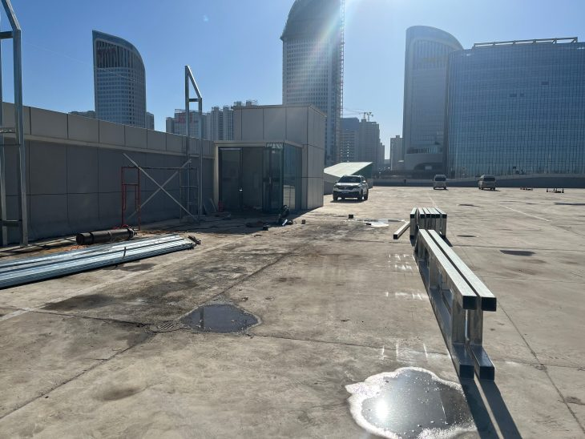
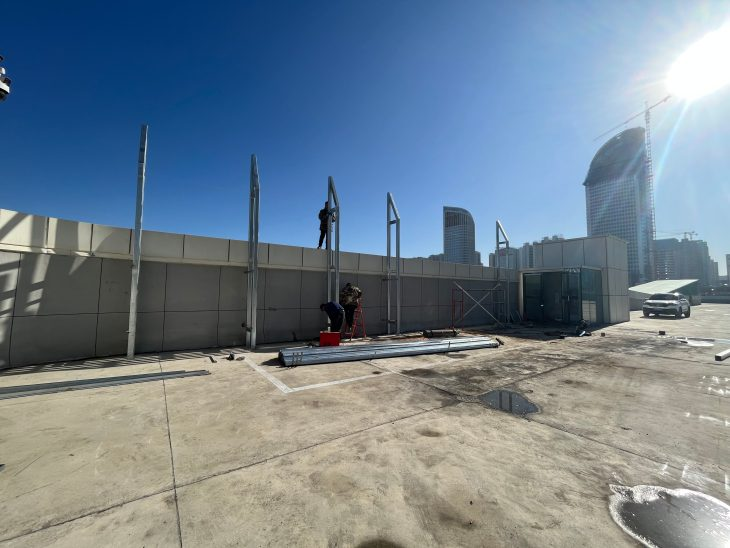
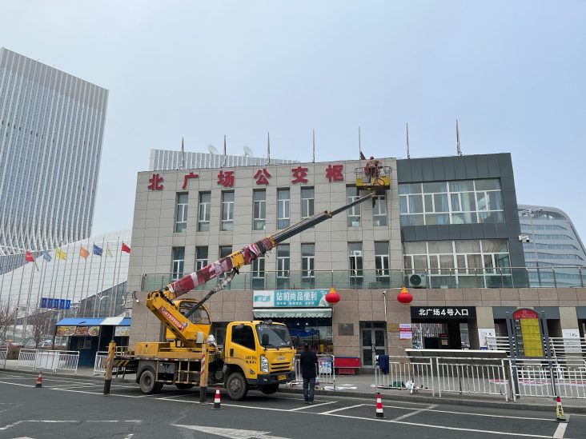
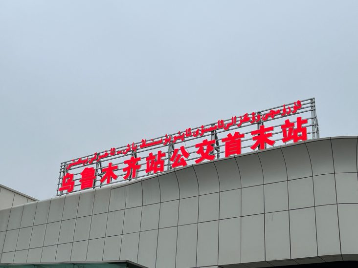
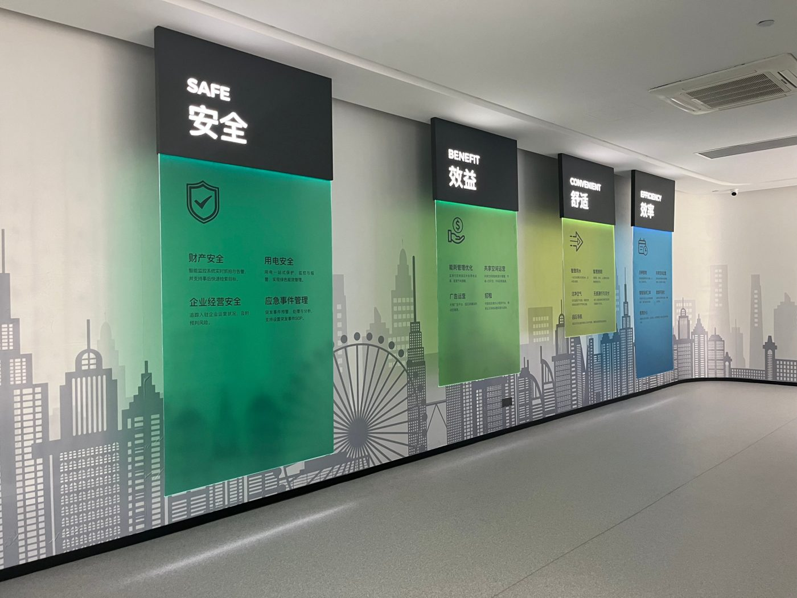
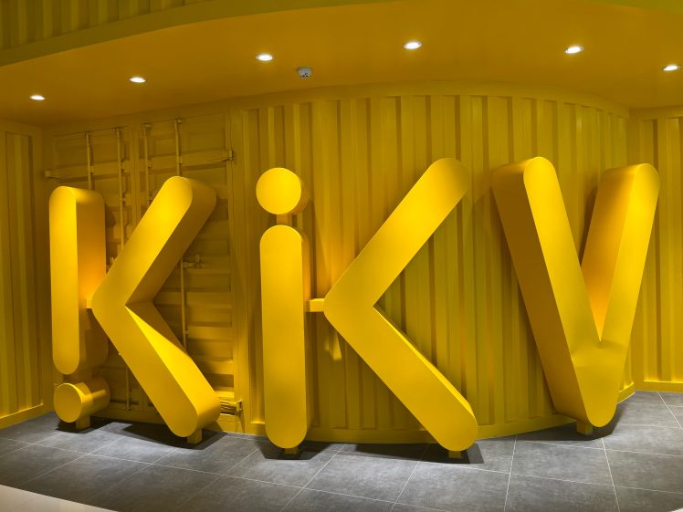
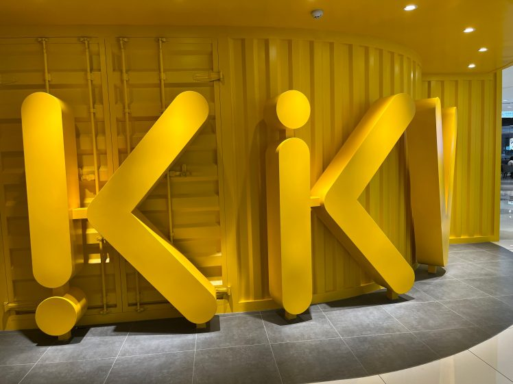
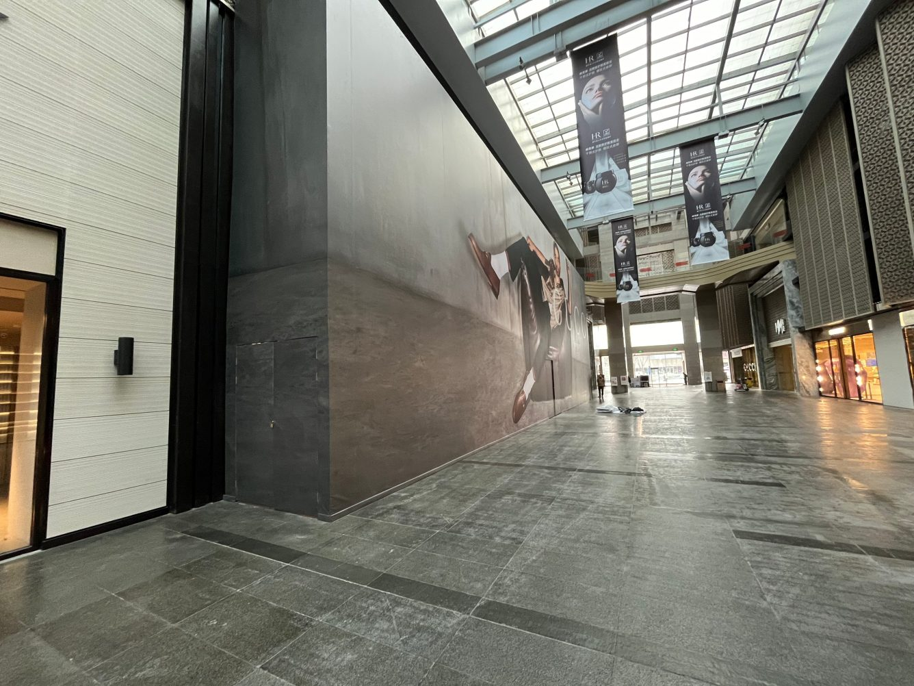
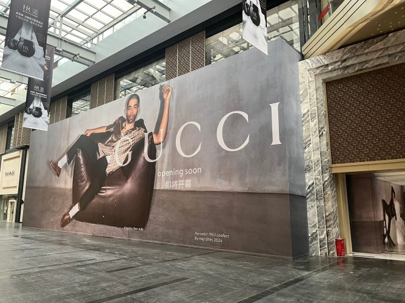
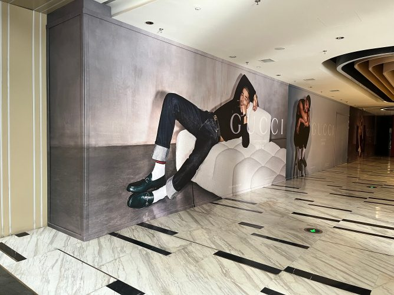

乌鲁木齐 · 标识 / 公共空间
高铁站公交枢纽 · 南北广场Railway Station Bus Hub
乌鲁木齐高铁站公交枢纽南北广场的标识与现场安装。Signage and on-site installation at the Urumqi railway station bus hub.




标识、门头、文化墙、展陈、雕塑与公共空间的真实落地记录。Real built records across signage, storefronts, culture walls, exhibitions, sculpture and public space.









